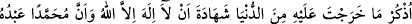
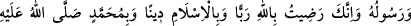
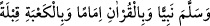

büyükleriyle çağırırız. Onlara “Ey Hanefî, Ey Şâfiî…” diye seslenilir. Ya da kitaplarına
göre çağrılır. Onlara: “Ey Kur’an ehli, Ey İncil ehli…” diye seslenilir. Ya da dinlerine
göre çağrılır. “Ey müslüman, Ey yahûdi, Ey hristiyan, Ey Mecûsî…” diye seslenilir.
et-Te’vîlâtü’n-Necmiyye’de şöyle der: Âyet her kavmin tâbî olduğu imâmına işâret
ediyor. Bazıları dünyaya, onun güzelliklerine ve zevklerine tâbî olurlar. Dolayısıyla
onlara: “Ey ehl-i dünya” diye seslenilir. Bazıları âhirete, onun nimetlerine ve
derecelerine tâbî olurlar. Onlara da: “Ey âhiret ehli” diye seslenilir. Bir topluluk ise
Allah sevgisi, ona yaklaşmak ve ma‘rifetulaha ulaşmak gayesiyle Rasûlullah (s.a.)’e
tâbî olur. İşte onlar da: “Ey ehlullah” diye çağrılır.
İmam kelimesinin “ümm” (anne) kelimesinin çoğulu olduğu da söylenilmiştir.
Anneleriyle birlikte çağrılmalarının hikmeti Îsâ (a.s.)’ın büyüklüğünü göstermek, Hasan
ve Hüseyin (r.anhümâ)’ya şeref bahşetmek içindir. Çünkü Hasan ve Hüseyin
(r.anhümâ)’nın annelerine nisbet edilmesi, soy olarak Rasûlullah (s.a.)’e nisbetlerini
ortaya koymaktadır. Oysa babalarına nisbetlerinde durum bunun aksinedir.
İnsanların annelerinin ismiyle çağrılmasının hikmetlerden biri de zinâdan olan
çocukların ayıplarını örtmektir. Bahru’l-ulûm’da zikredildiği üzere Hz. Âişe ve İbn
Abbas (r.anhümâ)’nın Hz. Peygamber (s.a.)’den rivâyet ettiği şu haber de bunu
desteklemektedir: “Allah kullarının ayıplarını örtmek için kıyâmet günü insanları
annelerinin ismiyle çağırır.”[120] Telkin hadisi de bunu te’yid eder:
Rasûlullah (s.a.) şöyle buyurmuştur:
“Kardeşlerinizden biri vefat edip de onu toprağa verdiğiniz vakit içinizden biri
onun kabrinin başında durup: “Ey filanca kadının oğlu filanca!” diye seslensin.
Çünkü, o (ölü) onu duyar, ancak cevap veremez. Sonra yine: “Ey filanca kadının oğlu
filanca!” diye seslensin. Bu sefer o (ölü) doğrularak oturur. Sonra tekrar: “Ey
filanca kadının oğlu filanca” diye seslensin. Bu sefer o: “Allah seni doğru yola
iletsin ve sana rahmet etsin.” der. Ancak siz bunu duyamazsınız. Sonra şöyle desin:
“Dünyadan çıkarken inandığın Allah’tan başka ilâh olmadığı Muhammed’in onun
kulu ve rasûlü olduğunu, Rab olarak Allah’ı, din olarak İslam’ı, peygamber olarak
Muhammed (s.a.) ’i, önder olarak Kur’ân’ı, kıble olarak Kâbe’yi seçtiğini hatırla.”
Çünkü münker ve nekirden her biri diğerinin elinden tutarak: “Hadi gidelim de ne
söyliyeceği kendisine telkin edilen kimsenin yanında oturmayalım.” derler. Bu telkin
onlara karşı kendisinin hucceti olmuş olur.” Bunun üzerine bir adam: “Ey Allah’ın
Resulü eğer annesinin ismini bilmiyorsa ne yapar?” diye sordu. Hz. Peygamber (s.a.):
“O zaman onu Havvâ’ya nisbet ederek seslensin.” buyurdu.[121] Hadîsi Sehâvî